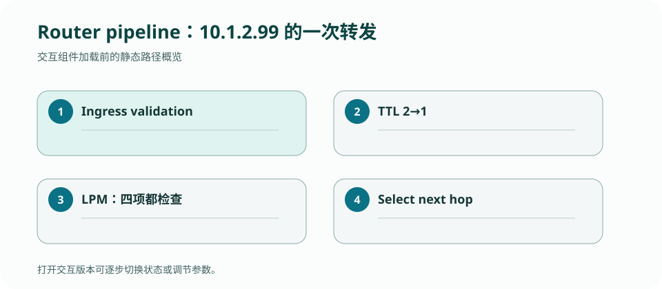

CS 168 · LECTURE 08 · 2026-09-22 · 路由
把“路由表里有一条路”继续拆开：输入解析、最长前缀匹配、交换结构、缓冲与调度共同决定一个包能否线速穿过路由器。
版本快照：Fall 2026 官方课表与在线教材，核对日期 2026-09-02；官网仍标注 under construction，日期与政策可能变化。
路由器每秒面对数亿个包时，控制平面算出的路径怎样变成确定、快速的数据平面动作？
目的地址可能同时匹配 0.0.0.0/0、10.0.0.0/8 与 10.1.0.0/16。选择前缀长度最大的表项，才能在聚合默认路由上叠加更具体例外。它不是选择 metric 最小；metric 已在控制平面决定每个前缀采用哪个 next hop。
查找结构需要在固定时钟预算内完成。软件可用压缩 trie，硬件可用 TCAM 或流水化 SRAM；课程重点是语义，但实现选择会影响功耗、容量与更新速度。
输入端口校验帧并取出 IP 包，路由器检查版本、长度和首部完整性，TTL 减一；若归零则丢包并生成 ICMP Time Exceeded。随后以目的 IP 查 FIB、解析下一跳链路地址、更新首部校验和并封装新帧。
目的 IP 通常不等于下一跳 IP：跨越广域网时，帧只需要到达同一链路上的下一台路由器。Traceroute 正是利用每跳 TTL 操作和 ICMP 反馈观测这条隐藏路径。
交换结构把输入端口的包移动到输出端口。若多个输入同时选择一个输出，必须排队；若缓冲在输入端，队首包可能挡住后方发往空闲输出的包（head-of-line blocking）。输出缓冲更灵活，却要求内存带宽跟上所有输入总速率。
队列满会丢包，排队增长会抬高延迟。调度器如 FIFO、priority、round robin 或 weighted fair queueing 决定不同流/类别如何分享输出链路。
IPv4 的 IHL、Total Length、Protocol、TTL、源/目的地址不是背诵题，而是解析与转发的控制输入。解析器必须先验证最短长度，再根据 IHL 定位 payload，最后根据 Protocol 解复用。
工程顺序应是“边界检查 → 读取字段 → 语义检查 → 动作”，避免截断 buffer 在切片或整数转换处崩溃。这个顺序会直接迁移到 Project 1。
路由器由多个依赖阶段组成，逐步跟踪能避免把控制平面和数据平面混为一谈。

为目的 10.1.2.3 在默认路由、10/8、10.1/16、10.1.2/24 四条表项中完成匹配；随后写出 TTL=1 包的完整处理结果。
检查：路由器收到 TTL=1 的 IPv4 包时应先做什么关键动作？
Routing plane 运行协议、接收 topology/route 信息并生成 FIB；forwarding plane 对每个到达的数据包执行固定、快速的查表与排队。控制面可以秒级变化，数据面必须按包完成。
检查：BGP 或 OSPF 计算新路径属于哪个平面？
输入数据报：src 192.0.2.44，dst 10.1.2.99，TTL=2。FIB 如下：
| prefix | next hop | interface |
|---|---|---|
| 10.0.0.0/8 | 192.0.2.1 | eth1 |
| 10.1.0.0/16 | 192.0.2.2 | eth2 |
| 10.1.2.0/24 | 192.0.2.3 | eth3 |
| 0.0.0.0/0 | 192.0.2.254 | eth0 |
| 阶段 | 检查 / state | 变化 | 输出或失败 |
|---|---|---|---|
| 1 · ingress validation | frame FCS、IPv4 version/IHL/length/checksum | 剥离 ingress link header | 非法则丢弃；不进入查表 |
| 2 · TTL | TTL=2 | 递减为 1，重算 IPv4 checksum | 若原 TTL≤1，丢弃并可能发 ICMP Time Exceeded |
| 3 · LPM | dst 的 bits 同时匹配 /8、/16、/24、/0 | 选择最长的 /24 | next hop 192.0.2.3 / eth3 |
| 4 · adjacency | 查 eth3 上 next-hop link address | 建立新 link header | 若邻居解析未完成则暂存，而非改目的 IP |
| 5 · queue | 读取 eth3 队列与调度状态 | packet 入队 | 拥塞时可能排队或丢弃 |
| 6 · emit | 调度器选择该 frame | 从 eth3 发送 | IP dst 仍为 10.1.2.99，TTL=1 |
检查：10.1.2.99 会选择哪条表项？
检查：若原始 TTL=1，路由器应在何时停止？
若 FIB 恰按 /8、/16、/24 排列，10.1.2.99 会从 eth1 离开，覆盖更具体 /24 的策略或可达性。若依靠手工排序“修复”，任何动态更新都可能重新破坏顺序。最长前缀不是实现细节，而是让聚合路由与例外路由共存的选择规则。
检查：删除 /24 后，同一目的地址走哪个接口？
检查：出口邻居 MAC 尚未知时，哪项最合理？
答案必须能用给定 FIB 算出 /24，并指出输出帧变、IP 目的地址不变、TTL 变。
正文是 CourseStack 的中文解释与重新绘制的教学例子；官方页面负责课程原始定义，历史仓库只提供你的实现证据。